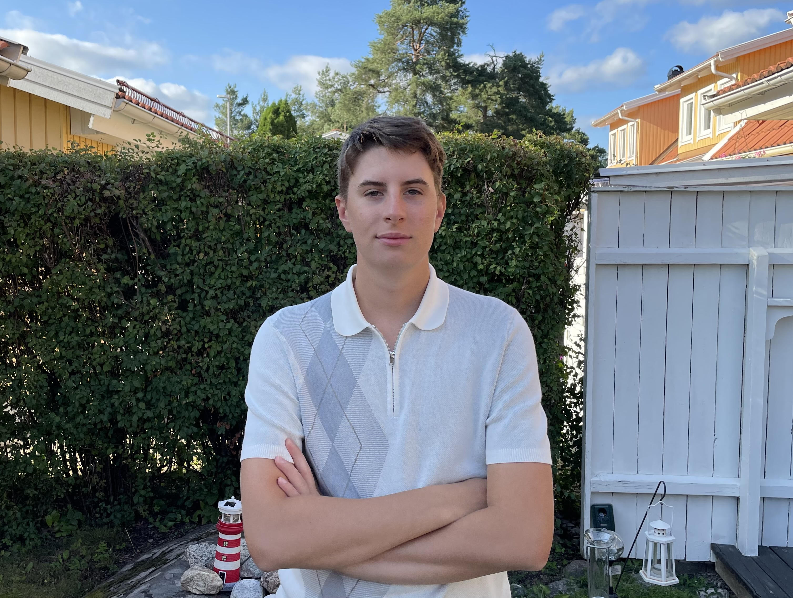
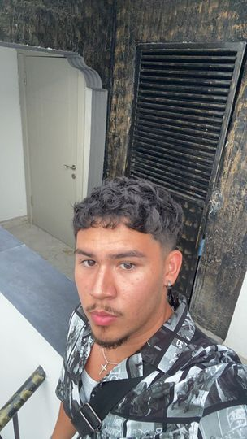

position: VD för företaget och har hand om personalens välmående samt ser till så att alla personal får det bekvämt i arbetsplatsen.
Ahmed Mohamed VD

Johan är vår resturangs Master chef som har studerat japansk cuisine i över 20 år och kommer ge er en utsökt måltid hos oss.
Johan M. Chef
Sharmarke är vår community manager som tar hand om feedback från våra kunder samt tar hand om vår hemsida.
Sharmarke Said CM
Mohammed har hand om säkerheten och ser till så att allt är som det ska i vår resturang.
Mohammed Osman Säkerhet

Johannes har hand om dina beställningar och ger dig den bästa servicen i marknaden.
johannes Hovmästare